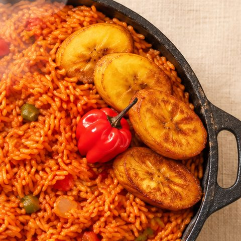
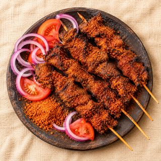

The menu.
21 dishes across 6 sections. Find your plate, then call and we'll have it hot for pickup.
Rice & mains
Our pots, cooked low and slow every morning.
-

$16Party Jollof Rice
PopularSmoky tomato-and-pepper rice cooked low in the pot, with fried plantain on top.
VeganGluten-free -
$15
Waakye
Rice and black-eyed beans with shito pepper sauce, boiled egg and gari.
-
$17
Fried Rice & Chicken
Vegetable fried rice with a quarter chicken, peppered and grilled.
Gluten-free -
$18
Chicken Yassa
NewChicken braised with caramelised onion, lemon and mustard, over white rice.
From our farmGluten-free
Soups & swallow
Rich stews served with a swallow: pounded yam, fufu or eba.
-
$19
Egusi & Pounded Yam
PopularGround melon-seed stew with leafy greens.
From our farmGluten-free -
$18
Efo Riro
Spinach stewed in red pepper sauce with smoked fish.
From our farmGluten-free -
$18
Light Soup & Fufu
Weekends onlyTomato-ginger goat soup, light but fiery.
From our farmGluten-free -
$17
Okra Soup & Eba
Fresh okra with beef and stockfish.
Gluten-free
From the grill
Charcoal-grilled to order. Allow 20 minutes.
-

$15Suya Skewers
PopularThin-sliced beef rubbed with peanut-chili yaji, served with red onion.
Gluten-free -
$24 (sold out today)
Grilled Tilapia
Sold outWhole fish with pepper sauce and fried plantain.
Gluten-free -
$22
Nyama Choma
Grilled goat with kachumbari tomato-onion salad.
From our farmGluten-free
Ethiopian
Served on injera, made to share.
-
$20
Doro Wat & Injera
PopularSlow berbere chicken stew with a boiled egg.
-
$16
Misir Wat
Red lentils simmered in berbere.
Vegan -
$19
Veggie Combo
Lentils, split peas, cabbage and greens on one platter.
From our farmVegan
Sides
Add any of these to a plate.
-
$6
Fried Plantain
Ripe plantain, fried until the edges caramelise.
VeganGluten-free -
$7
Moi Moi
Steamed bean pudding with peppers.
VegetarianGluten-free -
$6
Puff-Puff
Sweet fried dough balls, six to a bag.
Vegan -
$7
Jollof on the side
A smaller scoop of the house jollof.
VeganGluten-free
Drinks
Cold and house-made where we can.
-
$5
Zobo
Hibiscus with ginger and pineapple, made in-house.
VeganGluten-free -
$5
Ginger Beer
Fiery and fresh-pressed.
VeganGluten-free -
$4
Malta
Classic malt soda.
Vegan